MS Office Excel
Задачи алгебры, решаемые MS Office Excel
MS Office Excel позволяет:
- Вычислять значения выражений при определённых значениях переменных
- Выполнять операции над матрицами
- Находить корни уравнений с помощью различных численных методов
- Строить графики функций
Задачи математического анализа, решаемые MS Office Excel
MS Office Excel позволяет:
- Вычислять значения определённых интегралов с помощью численных методов
- Решать дифференциальные уравнения с помощью численных методов
Задачи геометрии, решаемые MS Office Excel
MS Office Excel позволяет работать с вычислительной частью задач по геометрии.
Особенности, различные способы решения задач с помощью MS Office Excel
В большинстве случаев MS Office Excel позволяет решать задачи только аналитическим методом.
Алгоритмы решения задач с помощью MS Office Excel
- Определить, к какому разделу математики относится задача
- Выбрать метод решения задачи
- Составить математическую модель
- Ввести исходные данные
- Ввести необходимые формулы
- Получить результат
- Провести анализ полученного результата
Особенности, достоинства и недостатки MS Office Excel
Главными достоинствами MS Office Excel являются:
- Возможность решения задач многими численными методами
- Удобство работы с матрицами
Главными недостатками MS Office Excel являются:
- Невозможность работы с выражениями в общем виде (без подстановки значений)
- Невозможность работы с чертежами в геометрических задачах
- Для решений многих задач пользователю нужно знать различные численные методы
Задачи
Задачи из алгебры
1. Вычислить 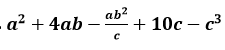 при a=5,b=6,c=7:
Формула в ячейке B7: “=A5*A5+4*A5*B5-(A5*B5*B5)/C5+10*C5-C5*C5*C5”
2. Найти матрицу, обратную матрице 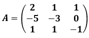
Формула для решения: “=МОБР(A2:C4)”
3. Найти определитель матрицы 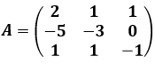
Формула для решения: “=МОПРЕД(A2:C4)”
4. Вычислить произведение матрицы 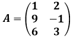 и матрицы 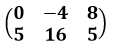
Формула для решения: “=МУМНОЖ(A2:B4;D2:F3)”
5. Транспонировать матрицу 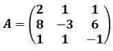
Формула для решения: “=ТРАНСП(A2:C4)”
Задачи из математического анализа
5. Транспонировать матрицу 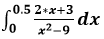
Вычисление производится методом прямоугольников левых частей.
1. Вычислить интеграл
Вычисление производится методом прямоугольников левых частей.
2. Вычислить интеграл 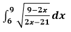
Вычисление производится методом прямоугольников правых частей.
3. Вычислить интеграл 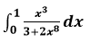
Вычисление производится методом трапеций.
4. Вычислить интеграл 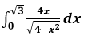
Вычисление производится методом трапеций.
5. Вычислить интеграл 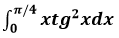
Вычисление производится методом трапеций.
Задачи из геометрии
1. Определить, принадлежит ли точка (3, 2) отрезку, ограниченному точками (1; 1), (5; 3)
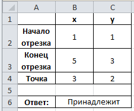Формула в ячейке B6: “=ЕСЛИ(И(((B4-B2)*(C3-C2)-(C4-C2)*(B3-B2) = 0); ИЛИ(И(B4<B3; B2<B4); И(B4<B2;B3<B4)));"Принадлежит";"Не принадлежит")”
2. Найти радиус вписанной в треугольник с вершинами в точках: A(-4;3), B(5;7), C(2;-3), окружности:
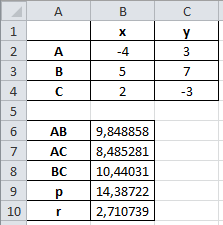Формула в ячейке B10: “=КОРЕНЬ(((B9-B6)*(B9-B7)*(B9-B8))/B9)”
3. Найти радиус окружности описанной около треугольника с вершинами в точках: A(-4;3), B(5;7), C(2;-3):
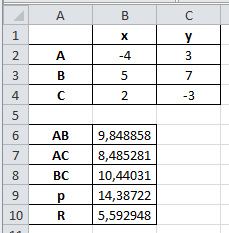Формула в ячейке B10: “=B6*B7*B8/(4*КОРЕНЬ(B9*(B9-B6)*(B9-B7)*(B9-B8)))”
4. Вычислить внутренние углы треугольника с вершинами A(-4;3), B(5;7), C(2;-3):
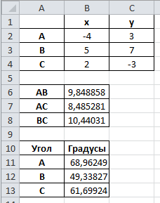Формула в ячейке B11: “=ГРАДУСЫ(ACOS((B6*B6+B7*B7-B8*B8)/(2*B6*B7)))”
Формула в ячейке B12: “=ГРАДУСЫ(ACOS((B6*B6+B8*B8-B7*B7)/(2*B6*B8)))”
Формула в ячейке B13: “=ГРАДУСЫ(ACOS((B7*B7+B8*B8-B6*B6)/(2*B7*B8)))”
5. Найти площадь четырёхугольника с координатами вершин; A(1, -1), B(-4, 4), C(6, 2), D(5, 0):
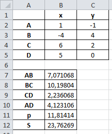Формула в ячейке B6: Формула в ячейке B12: “=КОРЕНЬ((B11-B7)*(B11-B8)*(B11-B9)*(B11-B10))”